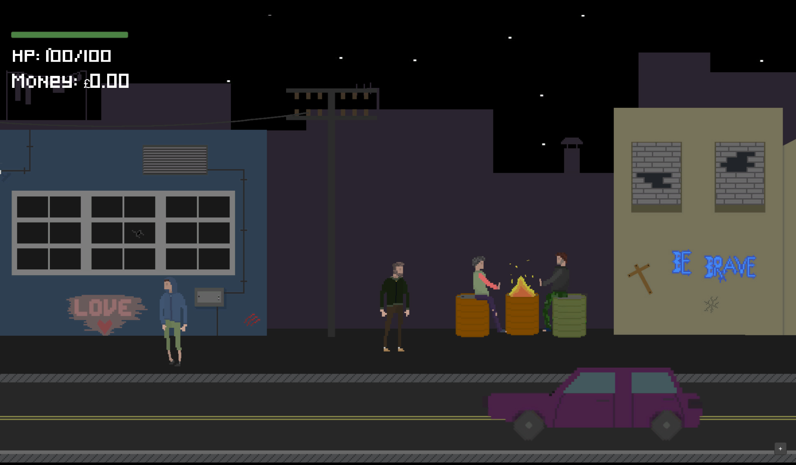
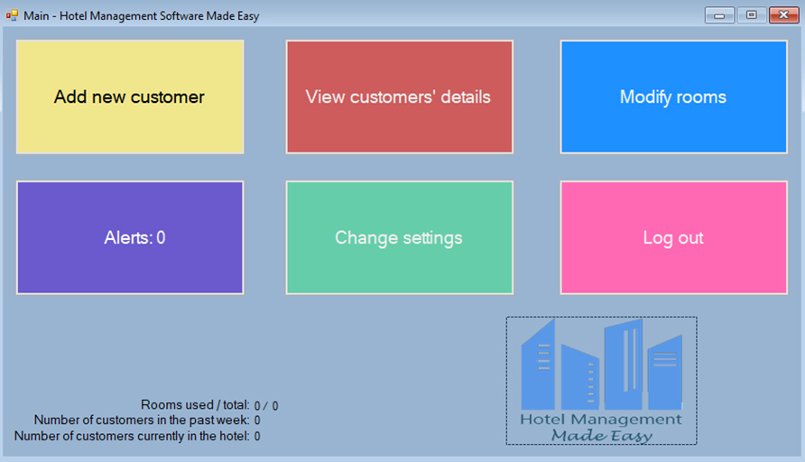
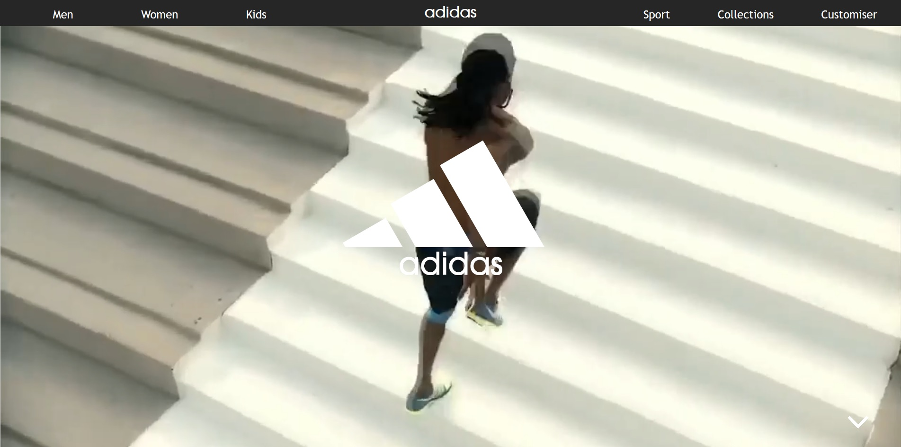

Cześć, jestem Michal Pierzchalski.
Jestem studentem w University of Lincoln, z zainsteresowaniem w programowaniu, bezpieczeństwie cybernetycznym i eksploracją kosmosu.
Email | Github | Moje podróże


Python

W wolnym czasie stworzyłem własnego asystenta który jest w pełni oparty na konsoli i został stworzony w języku Python.
Unity 3D
Back Home to gra wideo którą stworzyłem na potrzeby Global Game Jam 2019 która wygrała nagrodę "Najlepsze Wykorzystanie Tematu" większością głosów.
Oprogramowanie do zarządzania hotelami
C#
Na potrzeby A level w Informatyce, stworzyłem w pełni sprawne oprogramowanie dla hoteli które ma pomoc pracownikom zarządzać małym hotelem.
Wymiana studencka w Penang, Malezja
Wymiana studencka

W czerwcu 2019 zostałem wybrany jako nieliczny z dużej grópy aplikantów żeby doświadczyć wymiane studencką z KDU University w Malezij. Spędziłem dwa tygodnie na zapoznawaniu się z kulturą Malezji oraz odwiedzaniu wiodących w branży firm.
C# Software Development Fundamentals MTA
Certifikat
Niedawno miałem Microsoft Technology Associate egzamin po którym dostałem certyfikat ukączenia Software Development Fundamentals w języku C#.
Najbardziej efektywny użytkownik ICT
Nagroda
Podczas moich GCSE's dostałem nagrodę za Najbardziej efektywnego użytkownika ICT z całej szkoły za moje doskonałe umiejętności i wiedzę z zakresu informatyki.
Blender

Dla GCSE informatyki stworzyłem pierwszy poziom oryginalnego Super Mario Bros kompletnie w 3D.
HTML5 & CSS3
Jedno z pierwszych zadań jakie dostałem podczas moich studiów w Informatyce było stworzenie strony dla wybranej marki. Ja stworzyłem stronę dla Adidasa razem z sklepem, koszykiem i personalnym dostosowaniem butów. *Link*
Google Hash Code Challange 2019
Kompetycja
W tym roku wziąłem udział w Google Hash Code kompetycij. Ja i mój zespół dostaliśmy zadanie stworzenia programu który przesortuje miliony zdjęć gdzie najbardziej podobne zdjęcia będą obok siebie.
Unity 3D

Uprising 1944 to kolejna gra którą stworzyłem na Game Jam. Moja gra zajeła pierwsze miejsce w temacie "Najlepsze Wykorzystanie Tematu" większością głosów.
Kompetycja
W roku 2018 wiąłem udział w kompetycij Hack The Police. Ja i mój zespół stworzyliśmy oprogramowanie które pomoże policij znaleść osoby zaginione przez pomoc od osób postronnych.